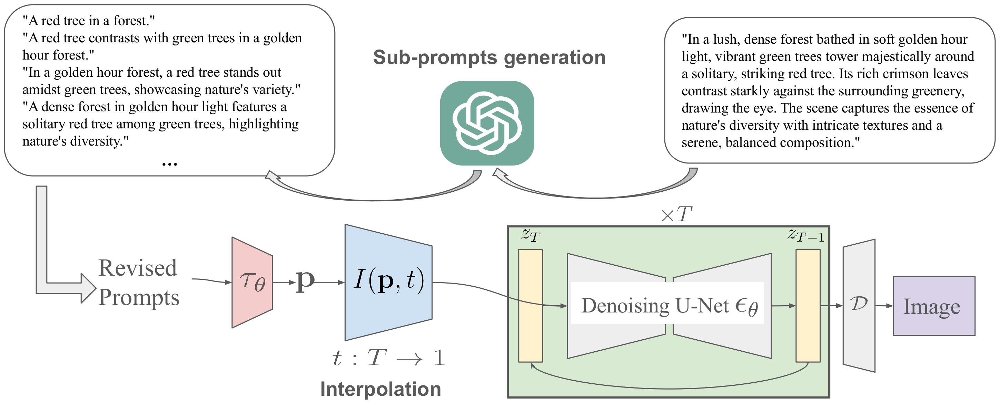
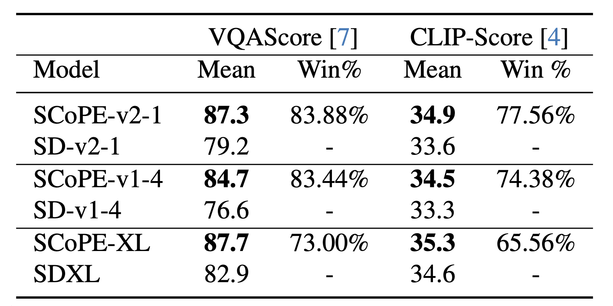
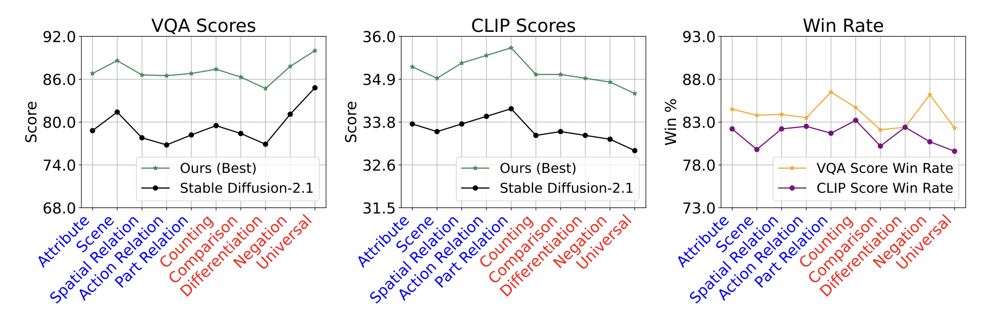
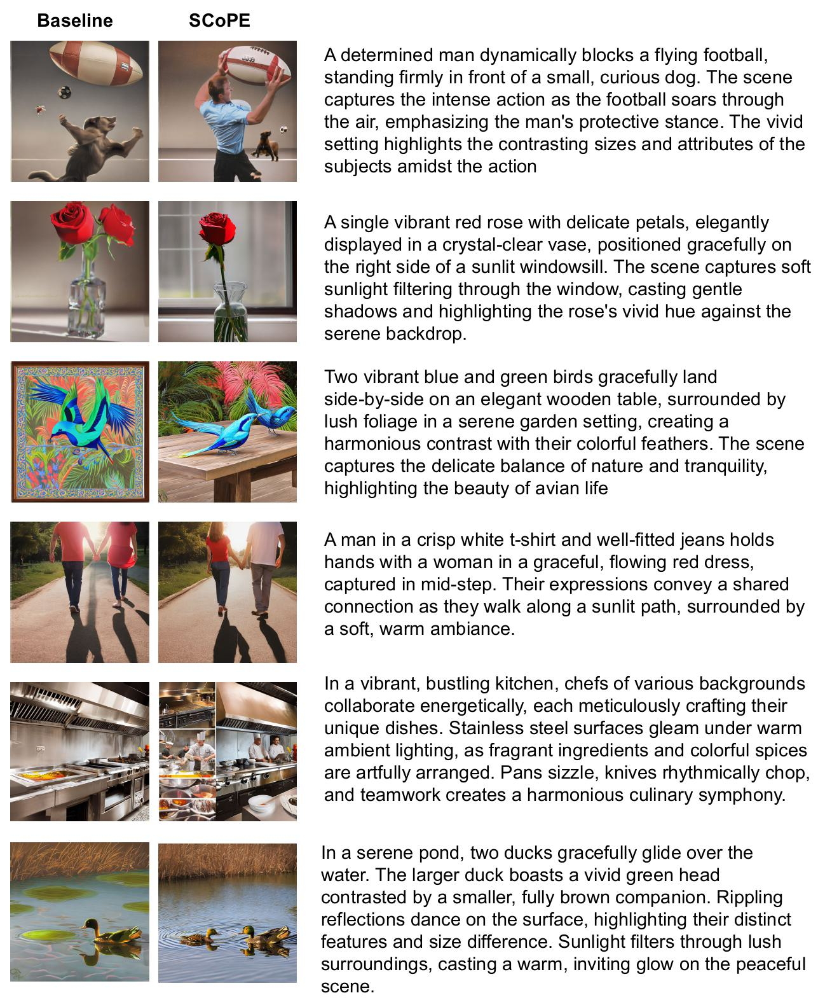

Text-to-image generative models often struggle with long prompts detailing complex scenes, diverse objects with distinct visual characteristics, and spatial relationships. In this work, we propose SCoPE (Scheduled interpolation of Coarse-to-fine Prompt Embeddings), a training-free method to improve text-to-image alignment by progressively refining the input prompt in a coarse-to-fine-grained manner. Given a detailed input prompt, we first decompose it into multiple sub-prompts which evolve from describing broad scene layout to highly intricate details. During inference, we interpolate between these sub-prompts and thus progressively introduce finer-grained details into the generated image. Our training-free plug-and-play approach significantly enhances prompt alignment, achieving an average improvement of more than +8 in Visual Question Answering (VQA) scores over the Stable Diffusion baselines on 83% of the prompts from the GenAI-Bench dataset.
SCoPE improves prompt-image alignment by dynamically breaking down the input prompt into a sequence of sub-prompts, evolving from a broad scene description to increasingly fine-grained details.

During inference, SCoPE interpolates between these sub-prompts throughout the denoising process, allowing the model to first establish the global structure and then refine finer details. A Gaussian-based weighting mechanism controls how influence smoothly shifts across timesteps.
Starting from the original prompt, SCoPE generates a sequence of sub-prompts using GPT-4o, each describing the same scene with increasing levels of detail. We obtain embeddings for each sub-prompt using a frozen text encoder.
Each sub-prompt is assigned a timestep that determines when it should maximally influence the denoising process. Early sub-prompts guide broad structure, while later ones refine finer semantic details. The final detailed prompt takes over fully after a predefined interpolation period.
To smoothly transition between sub-prompts, SCoPE applies a Gaussian weighting at each timestep, centered around the assigned timestep of each sub-prompt. The standard deviation \( \sigma \) controls the sharpness of this transition — smaller values produce sharper switches, while larger values enable a gradual blend.
The final text-conditioning at each timestep is computed as a weighted combination of all sub-prompts, allowing the model to progressively refine the image from global structure to intricate detail.
SCoPE against baseline models

SCoPE for different tags from the GenAI-Bench dataset

More Visuals (SD-2.1)

@misc{saichandran2025progressivepromptdetailingimproved,
title={Progressive Prompt Detailing for Improved Alignment in Text-to-Image Generative Models},
author={Ketan Suhaas Saichandran and Xavier Thomas and Prakhar Kaushik and Deepti Ghadiyaram},
year={2025},
eprint={2503.17794},
archivePrefix={arXiv},
primaryClass={cs.CV},
url={https://arxiv.org/abs/2503.17794},
}